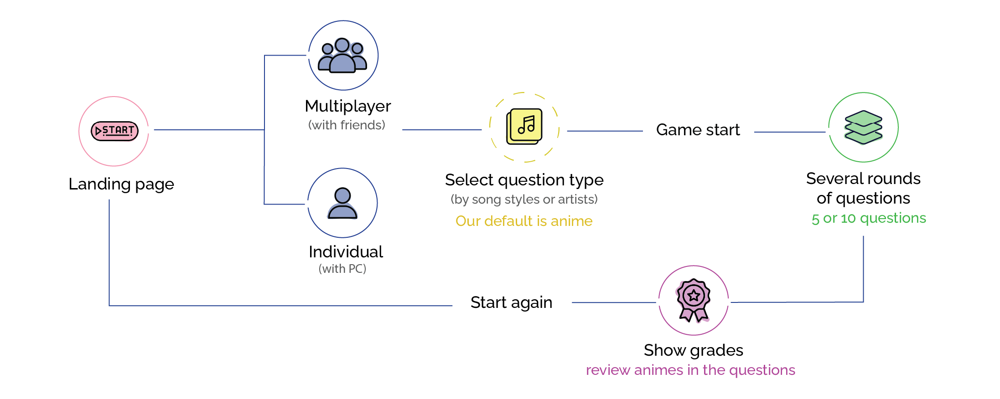
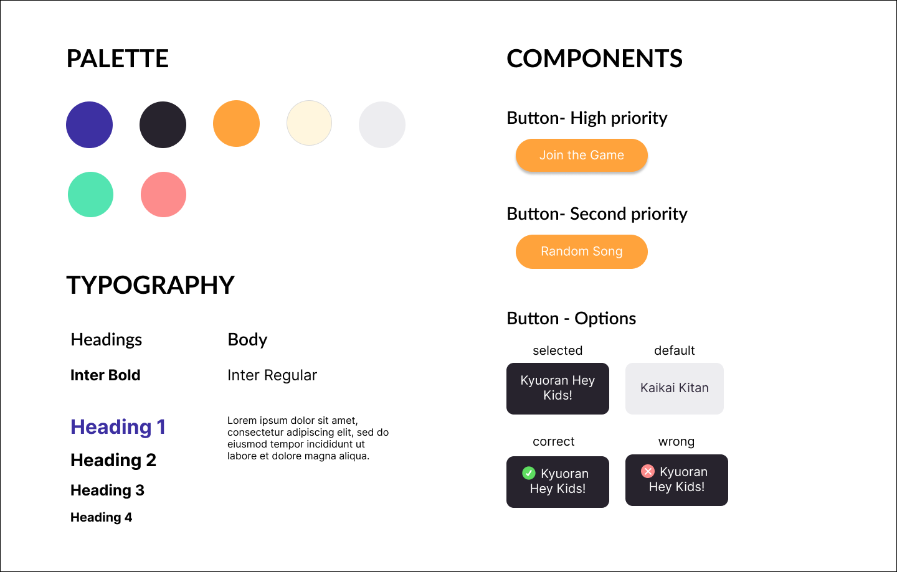
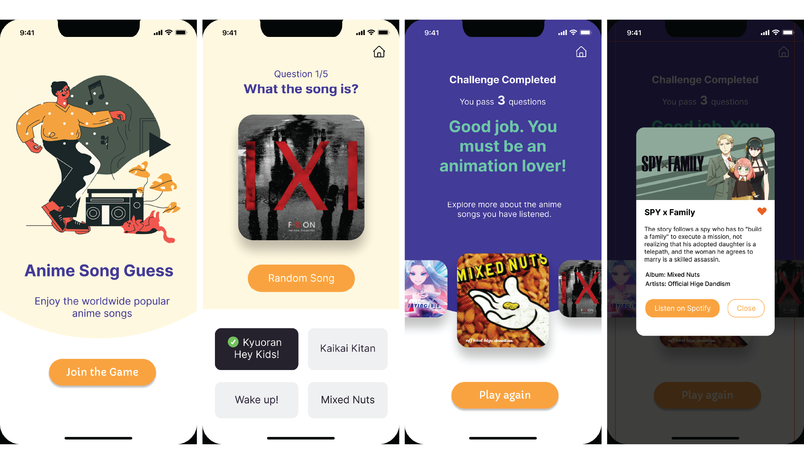
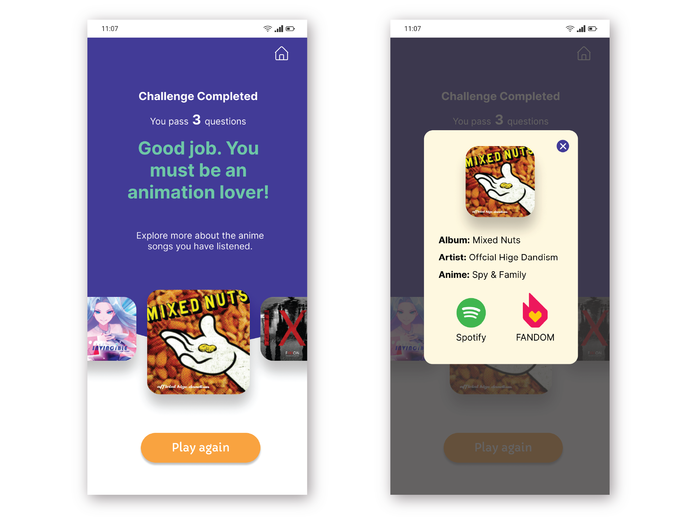

Motivation
As an international student, I often start a small talk with popular animes like One Piece and Naruto, and popular Japanse anime music that has been viral around the world. This song-guessing game is designed for young people to have fun through anime songs and the guessing game. In this way, international students from Asia or generally students who love animes can get involved in the new environment more easily.
Design Inspiration
To understand how to design a song-guessing game, I searched the existing similar products, including SongPop Classic and SongTrivia, and concluded their UX flows into a chart. A guessing-song game can be a multiplayer or single game. SongPop provides different song types to choose from, but in our case I skipped this step because the defaut is Japanese anime songs. Each round has 5 to 10 questions, and there is a review/grading page in the end of the game. After understanding the UX flow of a guessing-song game, I started thinking about the game mechanics.
Design trade-off
Competition-oriented or Learning-oriented?
Most of guess-song games position themselves as competitive games. However, competitive play often leads players to guess impulsively, skipping correct answers and rushing through questions. I believe multiplayer competition might hinder the pleasure. That’s why I designed the game for individual play first.
Encouraging Trial and Error in the Game
In the existing games, players have only one chance to guess the song in every question. Regardless of the result, the game automatically moves on to the next question but the current design can hardly intrigue students because they were rushed to finish the quize, so in my design, users have to try and error until they found the correct answer.
Wireframe
Low-fidelity wireframe
Based on the design research, I listed the necessary function and drew them into low-fidelity wireframes on Whimsical, and high-fidelity wireframes on Figma.
- Landing page
- Get random questions : perform the anime song’s main chorus
- Get random options : show four unrepeatitive album titles
- Answer logics : show correct/incorrect status
- Result page : show individual performance and anime information
High-fidelity wireframe
  Prototyping
I developed a web app for prototyping by React Native, NodeJS, and Expo. The music is from Spotify API, connecting to a Japanese anime playlists created by me. To cut down the API cost, I hosted the music data on Google Firebase. The final work is rendered on the Live Demo website (recommended to open on phone). To know more about my coding process, welcome to visit this repo on github.
User Testing
I randomly invited 6 university students at Indiana University Bloomington to play the game in a demo workshop. There were two groups of students, one had three American men, and the other had two Indian men who loved animes. Both grous disucssed frequently as they played together. There was a girl who learned Japanese playing the game alone, and she discussed the anime with me excitedly during the game.
Throughout the demo, I noticed some interesting points:
-
The game sparked a lot of group discussion.
Students playing the game in a group had the most discussion. Although the American guys were not a fan of Japanese animes and didn't understand Japanese, they listened to the music attentively, and trying to find the answer by the album picture. -
Anime fans were more immersed in the game.
The students who have learned Japanese or have watched Japanese animes were excited and got surprised when they heard the music they were familiar with. Comparatively, those who were less familiar with animes focused on cracking the questions by trial and error. -
Question limits needed for the quiz.
The students who were less familiar with animes felt distracted after five questions, and the anime fans can play more than seven questions. This indicated that five to ten questions per round is an ideal number.
Adjustment of the Design
From students' feedback and my observation, I made two UI adjustments:
-
Enlarge the option panel.
Since the song title was acquired from the Spotify API, the maximum can be as long as 8 words, which required users to scroll down. However, most of users didn’t scroll by dragging the scroll bar on the option panel. As a result, I minimized the button ‘Random Song’ to an icon, leaving more space for showing options. -
Showing anime introduction after each question.
The anime introduction were shown on the final result page in the first version, but most discussions happened during song-guessing. Thus, I moved the anime introduction forward - the introduction of the selected anime was shown right after the question. This was a good timing to provide extra information since users would be much more curious about the anime.
Reflection & Next Step
The app aims to help young students
who are interested in Japanese animes do ice-breaking
in a new environment. The user testing approved the motivation
of making the game - Students got lots of interactions and had fun with others,
showing the product has its social value.
However, it was harder for students who were less familiar with animes to
experience excitement, but they could still learn the anime introduction
regardless of whether they guessed it right or wrong.
The game is still in the early stage and requires more adjustments,
such as adding the multiplayer mode, and adding a time limit for each question.
When developing and designing this app, I found it hard to make a balance between
users' suggestion and my motivation. For example, adding time restriction
makes the game a competition, which contradicts my expectation of the game -
be relaxing and learning animes. I actually haven't decided how to adjust
for the next version, but I know I have to clarify the persona of my target player,
, the game's motivation, when the game will be played, etc. With more investigation about the TA,
it will be easier to make the decision.